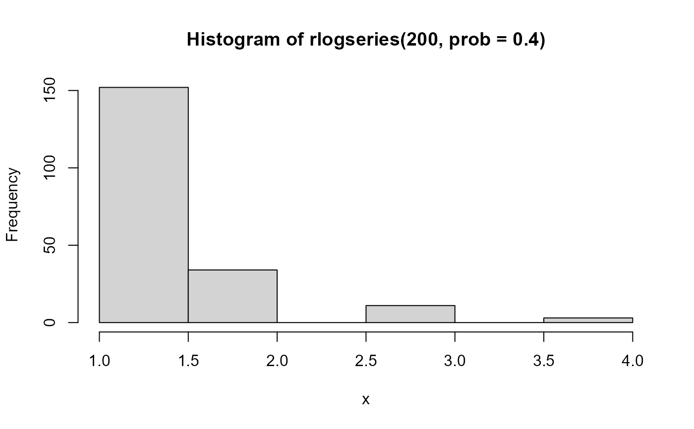
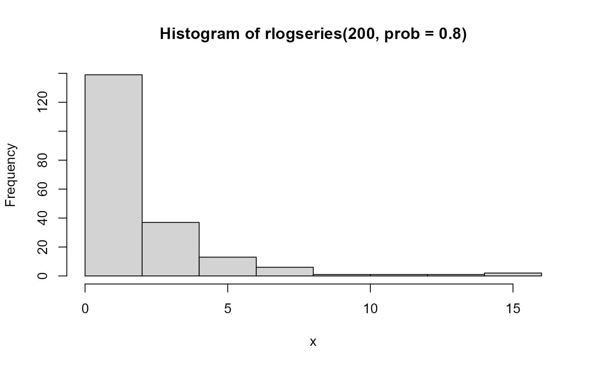
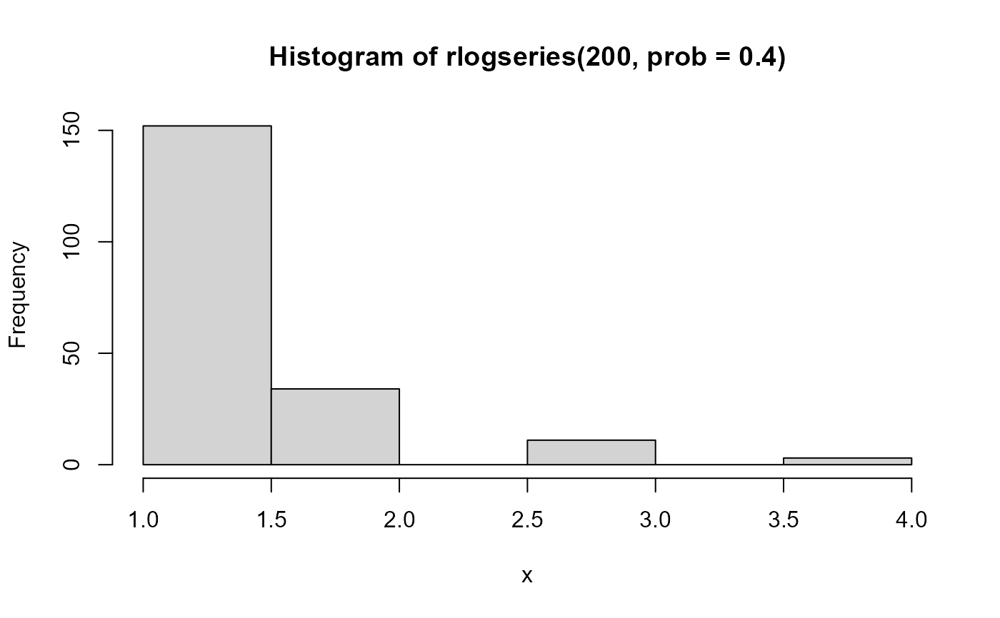
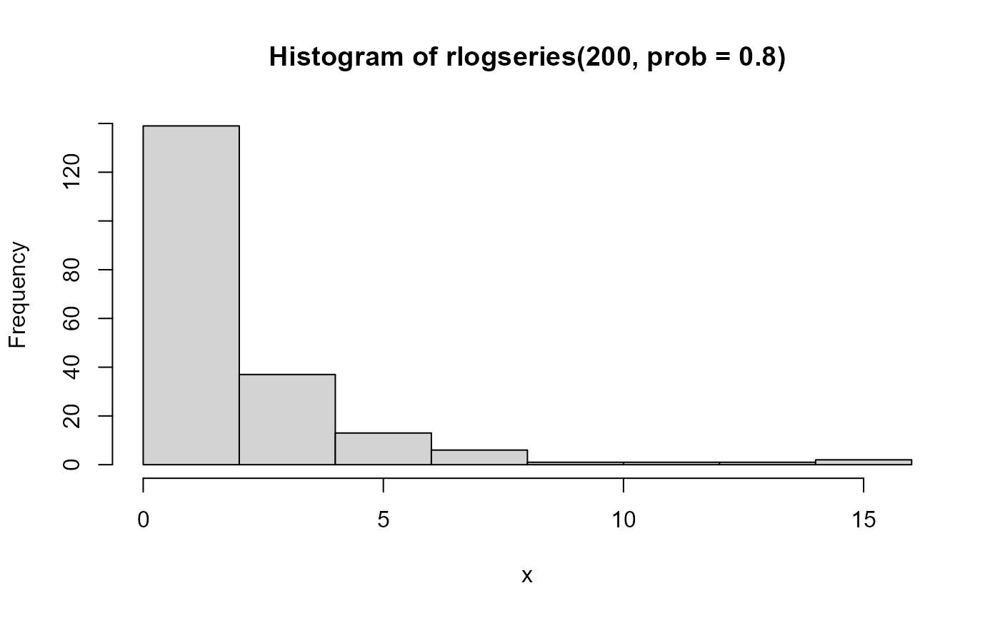

The Logarithmic Series Distribution
logseries.RdThe logarithmic series distribution is a long-tailed distribution introduced by Fisher etal. (1943) in connection with data on the abundance of individuals classified by species.
These functions provide the density, distribution function, quantile function and
random generation for the
logarithmic series distribution with parameter prob.
Usage
dlogseries(x, prob = 0.5, log = FALSE)
plogseries(q, prob = 0.5, lower.tail = TRUE, log.p = FALSE)
qlogseries(p, prob = 0.5, lower.tail = TRUE, log.p = FALSE, max.value = 10000)
rlogseries(n, prob = 0.5)Arguments
- x, q
vector of quantiles representing the number of events.
- prob
parameter for the distribution,
0 < prob < 1- log, log.p
logical; if TRUE, probabilities
pare given aslog(p)- lower.tail
logical; if TRUE (default), probabilities are \(P[X \le x]\), otherwise, \(P[X > x]\).
- p
vector of probabilities
- max.value
maximum value returned by
qlogseries- n
number of observations for
rlogseries
Details
The logarithmic series distribution with prob = \(p\) has density
$$
p ( x ) = \alpha p^x / x
$$
for \(x = 1, 2, \dots\), where \(\alpha= -1 / \log(1 - p)\)
and \(0 < p <1\). Note that counts x==2 cannot occur.
Value
dlogseries gives the density,
plogseries gives the distribution function,
qlogseries gives the quantile function, and
rlogseries generates random deviates.
References
https://en.wikipedia.org/wiki/Logarithmic_distribution
Fisher, R. A. and Corbet, A. S. and Williams, C. B. (1943). The relation between the number of species and the number of individuals Journal of Animal Ecology, 12, 42-58.
Author
Michael Friendly, using
original code modified from the gmlss.dist package
by Mikis Stasinopoulos.
See also
Distributions, ~~~
Examples
XL <-expand.grid(x=1:5, p=c(0.33, 0.66, 0.99))
lgs.df <- data.frame(XL, prob=dlogseries(XL[,"x"], XL[,"p"]))
lgs.df$p = factor(lgs.df$p)
str(lgs.df)
#> 'data.frame': 15 obs. of 3 variables:
#> $ x : int 1 2 3 4 5 1 2 3 4 5 ...
#> $ p : Factor w/ 3 levels "0.33","0.66",..: 1 1 1 1 1 2 2 2 2 2 ...
#> $ prob: num 0.82402 0.13596 0.02991 0.0074 0.00195 ...
require(lattice)
#> Loading required package: lattice
#>
#> Attaching package: 'lattice'
#> The following object is masked from 'package:gnm':
#>
#> barley
mycol <- palette()[2:4]
xyplot( prob ~ x, data=lgs.df, groups=p,
xlab=list('Number of events (k)', cex=1.25),
ylab=list('Probability', cex=1.25),
type='b', pch=15:17, lwd=2, cex=1.25, col=mycol,
key = list(
title = 'p',
points = list(pch=15:17, col=mycol, cex=1.25),
lines = list(lwd=2, col=mycol),
text = list(levels(lgs.df$p)),
x=0.9, y=0.98, corner=c(x=1, y=1)
)
)
 # random numbers
hist(rlogseries(200, prob=.4), xlab='x')

hist(rlogseries(200, prob=.8), xlab='x')

# random numbers
hist(rlogseries(200, prob=.4), xlab='x')

hist(rlogseries(200, prob=.8), xlab='x')
